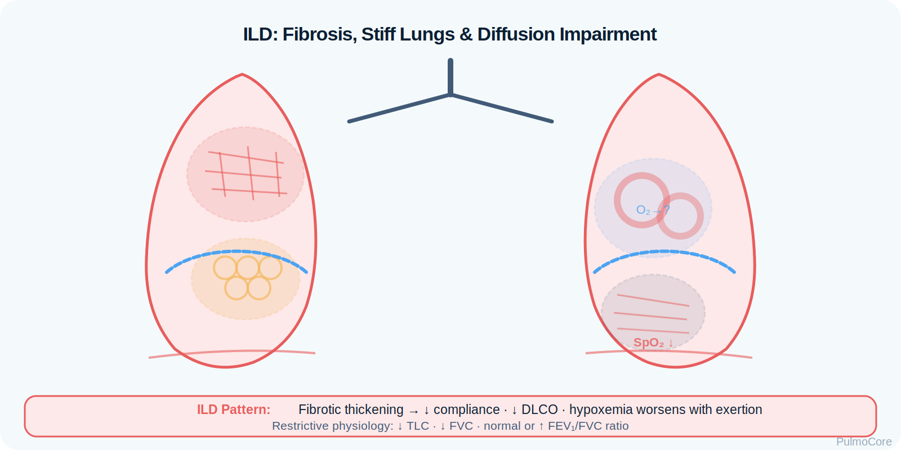
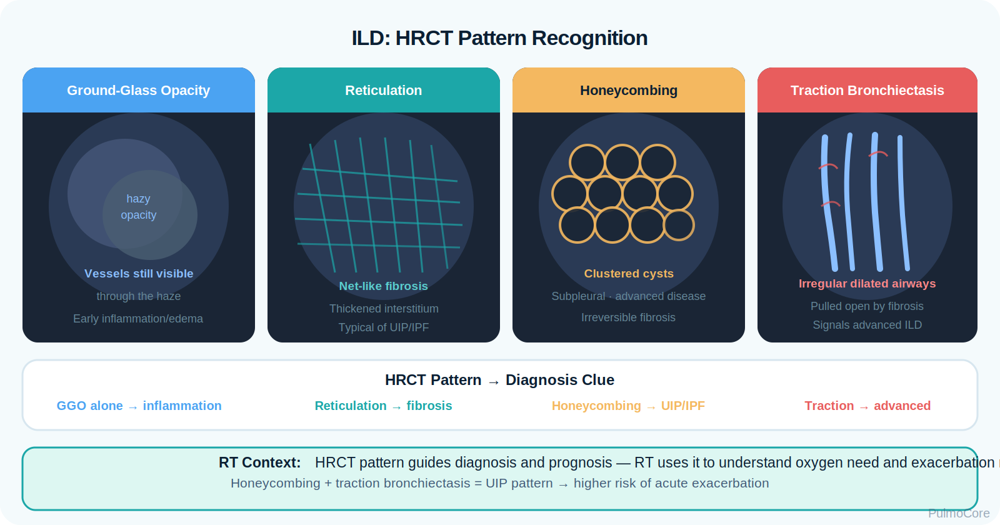

RT Clinical Connection
For RTs, ILD is a diffusion and compliance problem. A patient may look acceptable at rest but desaturate quickly with walking because exercise shortens capillary transit time and exposes diffusion limitation.
Interstitial lung disease (ILD) is a broad group of restrictive lung disorders in which inflammation and/or fibrosis thickens the alveolar-capillary interface, stiffens the lungs, lowers lung volumes, and impairs oxygen transfer. This module focuses on RT-level recognition, PFT/ABG interpretation, oxygen assessment, escalation, pulmonary rehab, and board-style clinical reasoning.
By the end of this ILD module, learners should be able to connect interstitial fibrosis, restrictive mechanics, diffusion impairment, diagnostic patterns, oxygen needs, and escalation priorities.
Watch this quick overview before moving into the disease snapshot.
ILD is not one disease. It is a family of disorders that affect the lung interstitium. As the interstitium becomes inflamed or scarred, the lungs become stiff and gas transfer becomes inefficient, especially during exertion.
For RTs, ILD is a diffusion and compliance problem. A patient may look acceptable at rest but desaturate quickly with walking because exercise shortens capillary transit time and exposes diffusion limitation.
Immediately connect ILD with restrictive mechanics: decreased TLC, decreased FVC, normal/high FEV₁/FVC, decreased DLCO, fine inspiratory crackles, clubbing, exertional desaturation, and HRCT findings such as reticulation or honeycombing.
Which statement best describes the core pulmonary problem in interstitial lung disease?
In ILD, injury occurs in the interstitium around alveoli and capillaries. Inflammation, collagen deposition, and fibrosis thicken the diffusion barrier and reduce lung compliance. The patient must work harder to breathe, yet oxygen transfer remains limited.

Visual learning:| ILD Change | What Happens | Why It Matters |
|---|---|---|
| Fibrotic interstitium | Scar tissue thickens the alveolar-capillary interface. | Oxygen has farther to diffuse, lowering DLCO. |
| Reduced compliance | Lungs become stiff and harder to expand. | Creates rapid shallow breathing and increased WOB. |
| Low lung volumes | TLC and FVC decrease. | Supports a restrictive PFT pattern. |
| V/Q and diffusion limitation | Oxygen transfer becomes inefficient. | Causes hypoxemia, especially with exercise. |
| Progressive remodeling | Fibrosis may worsen over time. | Can lead to chronic respiratory failure and pulmonary hypertension. |
Early or stable ILD may show hypoxemia with respiratory alkalosis because the patient hyperventilates. Advanced or acute worsening disease may progress to severe hypoxemia and, if fatigue develops, rising PaCO₂.
A sudden increase in oxygen requirement, new severe dyspnea, or new bilateral infiltrates in a patient with known ILD may represent acute exacerbation and needs urgent escalation.
Click each hotspot to reveal how that structure contributes to ILD.

ILD may be idiopathic, autoimmune, occupational/environmental, medication-related, radiation-related, or associated with hypersensitivity exposure. The RT should connect history to likely mechanism while prioritizing oxygenation and function.
| Cause or Risk Factor | Why It Matters | Teaching Focus |
|---|---|---|
| Idiopathic pulmonary fibrosis | Progressive fibrotic ILD pattern. | Monitor function, oxygen need, and referral timing. |
| Connective tissue disease | Autoimmune inflammation can involve lung interstitium. | Ask about systemic symptoms and medications. |
| Hypersensitivity pneumonitis | Inhaled organic antigens can trigger immune lung injury. | Exposure identification/removal is high yield. |
| Occupational exposures | Dusts such as silica/asbestos can cause fibrotic disease. | Take a work and exposure history. |
| Medication/radiation injury | Some drugs and thoracic radiation can injure lung tissue. | Review treatment history. |
Choose the best category for each item, then check your answers.
ILD often presents gradually with exertional dyspnea and dry cough. As restriction and diffusion impairment progress, patients may develop tachypnea, fine inspiratory crackles, clubbing, resting hypoxemia, pulmonary hypertension, and declining exercise tolerance.
| Finding Type | What the RT May See |
|---|---|
| Symptoms | Progressive dyspnea, dry cough, fatigue, activity intolerance. |
| Breathing pattern | Rapid shallow breathing due to stiff lungs and increased elastic load. |
| Breath sounds | Fine inspiratory crackles, often basilar; wheezing is not the classic pattern. |
| Oxygenation clues | Exertional desaturation, low PaO₂, increased oxygen need over time. |
| Chronic signs | Digital clubbing, weight loss, pulmonary hypertension signs in advanced disease. |
| Response clues | Bronchodilators may help coexisting obstruction but do not reverse fibrosis. |
Do not judge ILD severity by resting SpO₂ alone. Many patients reveal the problem during ambulation or a six-minute walk test.
Categorize each finding as a Typical ILD Finding, Severity Sign, or Urgent Concern, then check your answers.
Diagnostic data helps confirm restriction, quantify diffusion impairment, identify disease pattern, and monitor progression or acute worsening.

Visual learning:| Finding | ILD Pattern |
|---|---|
| TLC | Decreased; confirms restriction when below normal. |
| FVC | Decreased due to reduced lung volume. |
| FEV₁ | Often decreased proportionally to FVC. |
| FEV₁/FVC | Normal or increased because FVC falls with FEV₁. |
| DLCO | Decreased due to impaired gas transfer. |
| Pattern | Meaning |
|---|---|
| Low PaO₂ with low/normal PaCO₂ | Common hypoxemia with compensatory hyperventilation. |
| Worse SpO₂ during walking | Diffusion limitation and reduced reserve. |
| Rising PaCO₂ with fatigue | Possible ventilatory failure or advanced disease. |
| Increasing oxygen need | Progression, acute exacerbation, infection, PE, or pulmonary hypertension must be considered. |
HRCT is central for ILD pattern recognition. Chest x-ray may show reticular or reduced-volume changes but can miss early disease.
ILD severity is commonly tracked by symptoms, HRCT pattern, FVC/TLC trend, DLCO, resting and exertional oxygen saturation, six-minute walk distance, and progression rate.
| Severity Clue | Why It Matters |
|---|---|
| Falling FVC or TLC | Suggests worsening restriction. |
| Low or declining DLCO | Suggests worsening diffusion impairment or pulmonary vascular disease. |
| Exertional desaturation | May require ambulatory oxygen titration. |
| Reduced six-minute walk distance | Reflects functional impact and prognosis. |
| Resting hypoxemia | Indicates more advanced gas exchange impairment. |
A patient with ILD has SpO₂ 94% at rest, but drops to 84% during a six-minute walk. What does this most strongly suggest?
The key question is whether the patient’s gas exchange is stable, worsening gradually, or acutely deteriorating.
| Red Flag | Why It Matters |
|---|---|
| Sudden worsening dyspnea or hypoxemia | May indicate acute exacerbation, PE, infection, pneumothorax, or heart failure. |
| Rapidly increasing oxygen requirement | Signals unstable gas exchange. |
| New bilateral infiltrates on imaging | Concerning for acute ILD exacerbation or other acute process. |
| Syncope, chest pain, loud P2, edema | May suggest pulmonary hypertension/right-heart strain. |
| Rising PaCO₂ with fatigue | Late sign of ventilatory failure. |
| Severe desaturation with minimal activity | Shows limited reserve and high escalation need. |
ILD management depends on cause, inflammatory versus fibrotic pattern, oxygenation, progression, and complications. RT care focuses on oxygen assessment/titration, pulmonary rehab, education, monitoring, and escalation.
| Approach | Examples | Why It Helps |
|---|---|---|
| Remove exposure | Antigen/dust avoidance when relevant. | Reduces ongoing injury in exposure-related ILD. |
| Treat inflammation | Corticosteroids or immunosuppressive therapy for selected ILDs. | Targets inflammatory disease patterns when ordered. |
| Slow fibrosis | Antifibrotic therapy for selected progressive fibrotic ILDs. | May slow lung function decline. |
| Oxygen therapy | Resting, exertional, or nocturnal oxygen when indicated. | Corrects hypoxemia and supports activity. |
| Pulmonary rehab | Exercise training, breathing strategies, education. | Improves functional status and symptom control. |
| Advanced referral | ILD specialty clinic or transplant evaluation. | Needed for progressive or advanced disease. |
Fibrosis causes stiff lungs and diffusion limitation; RT interventions do not remove scarring, but they can improve oxygenation support, activity tolerance, monitoring, education, and timely escalation.
Respiratory therapists manage interstitial lung disease (ILD) by assessing oxygenation and respiratory mechanics, identifying worsening gas exchange or acute deterioration, supporting oxygen therapy and ventilation, reassessing response, and escalating care when hypoxemia or respiratory distress progresses.

NBRC-style ILD questions commonly test whether the RT recognizes restrictive physiology, exertional hypoxemia, diffusion impairment, acute worsening triggers, and the need for escalating oxygen support or advanced respiratory intervention.
Select the steps in the best general order for an ILD patient with worsening dyspnea.
Acute exacerbation of ILD is a sudden respiratory decline that may involve new diffuse lung injury on top of chronic fibrotic disease. These patients can deteriorate quickly and may require high-flow oxygen, noninvasive support, intubation discussion, or transfer depending on goals and severity.
ILD is restrictive. If a question gives decreased TLC/FVC plus normal or high FEV₁/FVC and decreased DLCO, think interstitial process rather than obstructive airway disease.
The RT is central to oxygen assessment, exertional testing support, education, pulmonary rehab, symptom monitoring, escalation, and safe respiratory support.
| RT Task | What to Assess or Do | Why It Matters |
|---|---|---|
| Assess oxygenation | Resting SpO₂, ABG, exertional SpO₂, oxygen device/settings. | Detects diffusion limitation and oxygen need. |
| Assess mechanics | RR, shallow pattern, accessory muscle use, fatigue. | Shows increased elastic work from stiff lungs. |
| Evaluate breath sounds | Fine inspiratory crackles, diminished sounds, new changes. | Supports recognition and acute change detection. |
| Support diagnostics | PFT coaching, 6MWT monitoring, oxygen titration per protocol. | Quantifies restriction and exertional desaturation. |
| Educate patient | Oxygen safety, pacing, rehab, infection prevention, symptom action plan. | Improves daily management and escalation timing. |
This guided case reveals one clinical stage at a time. Learners make an RT decision, receive feedback, and then continue to the next stage.
A 68-year-old patient reports progressive dyspnea and a dry cough for 10 months. They can speak at rest but become short of breath walking to the exam room.
Decision Question: What is the best RT assessment priority?
During a six-minute walk, SpO₂ drops to 84% and the patient becomes visibly dyspneic.
Decision Question: What does this finding most strongly support?
PFTs show decreased TLC, decreased FVC, normal/high FEV₁/FVC, and decreased DLCO.
Decision Question: How should this pattern be interpreted?
Two months later, the patient presents with sudden worsening dyspnea, SpO₂ 82% on usual oxygen, and new bilateral infiltrates.
Decision Question: What is the safest interpretation?
Answer each question to complete this activity. Answer choices shuffle each time the lesson opens.
A patient has decreased TLC, decreased FVC, normal/high FEV₁/FVC, and decreased DLCO. Which pattern does this support?
Which finding is most concerning in a patient with known ILD?
Why is DLCO commonly decreased in ILD?
Which RT action best evaluates a common hidden problem in ILD?
ILD is a group of disorders where the supporting tissue around alveoli becomes inflamed or scarred, causing stiff lungs and impaired oxygen transfer.
ILD is typically restrictive with low lung volumes and preserved/increased FEV₁/FVC. COPD is obstructive with airflow limitation and a decreased FEV₁/FVC.
Exercise increases oxygen demand and shortens blood transit time through pulmonary capillaries, exposing the diffusion limitation caused by a thickened interstitium.
It means gas transfer across the alveolar-capillary membrane is impaired. In ILD, fibrosis and interstitial thickening commonly lower DLCO.
Not usually. Bronchodilators may help if obstruction coexists, but they do not reverse fibrosis. Oxygen support, pulmonary rehab, cause-directed therapy, and specialty management are more central.
It is a sudden respiratory worsening, often with new infiltrates and severe hypoxemia, that requires urgent evaluation and escalation.
Think restriction: decreased TLC/FVC, normal or increased FEV₁/FVC, decreased DLCO, fine crackles, exertional desaturation, and HRCT abnormalities.
Interstitial lung disease causes restrictive mechanics and diffusion impairment. The lungs become stiff, lung volumes fall, DLCO decreases, and oxygenation often worsens with exertion before it becomes abnormal at rest.
Click the card to flip it. Use Term → Definition or Definition → Term mode. Mark known cards to move them into the completed pile.